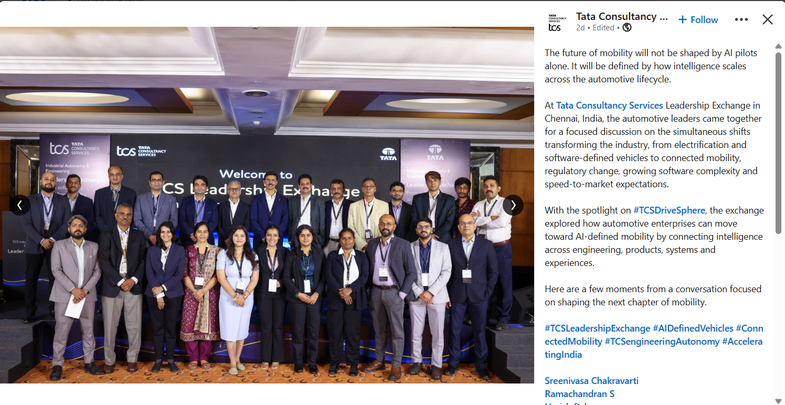

Hi I am
MD Oyasim Raja
Robotics Engineer
I have a strong passion for Physical AI, robot control, motion planning, and autonomous systems. I build robots that work inside and outside the lab, from simulation to real-world deployment.
I own the full stack of physical AI: scene description, multi sensor fusion, SLAM and localization, GPU accelerated perception, path planning, obstacle avoidance, and manipulator control using kinematics and reinforcement learning, extending into NVIDIA Cosmos for scene-level perception reasoning and Vision-Language-Action (VLA) models for real time robot decision-making, combined with GPU accelerated inverse kinematics and grasp planning for fast, low latency perception-to-action pipelines. I take systems from digital twins in NVIDIA Isaac Sim to physical deployment on autonomous mobile robots and collaborative robots. This work has been showcased at expos both within TCS and externally, presented to 50+ customers in 2025-26 and counting.
My work spans sensor calibration, localization, and mapping fundamentals underlying SLAM, applied across scalable multi-robot systems on industrial-grade firmware and embedded platforms. I've hit sub-centimeter localization accuracy on real AMR platforms, replaced dedicated depth sensors with monocular AI models validated against hardware ground truth, and built voice-controlled robotic manipulation with on device LLM inference.
This isn't research for its own sake. Every one of these systems had to survive contact with a real, unforgiving deployment environment.

Technical Skills
Languages
Robotics
AI/ML & Perception
Simulation & Modelling
NVIDIA Stack
Education
My academic background and qualifications.
B.Tech, Electrical Engineering
University of Science, Technology and Agriculture, CU, Kolkata
Sep 2021 – May 2024
B.Sc, Physics (Honours)
Asutosh College, University of Calcutta, Kolkata
Jun 2018 – Aug 2021
Experience
Below is my employment / experience history.
Tip: Scroll inside to read the full LinkedIn post.
Information shared in compliance with TCS confidentiality policies.
AMR Navigation & Physical AI
Tata Consultancy Services
Apr 2025 - Present
- Architected an end-to-end AMR navigation stack combining Karto SLAM, AMCL localization, IMU and wheel-odometry sensor fusion, and A*, DWB and TEB planners with a custom robot control SDK and firmware matched to platform drive kinematics.
- Built multi-sensor fusion pipelines (LiDAR, IMU, camera) for 2D/3D mapping with tuned costmap layers, implementing Google Ceres Solver for sparse pose-graph optimization and tuned SLAM localization, achieving 10mm loop closure error with drift-free mapping across complex environments.
- Built real-time dynamic obstacle avoidance using layered costmaps (static, obstacle, inflation) fused with LiDAR and depth camera perception, extending reaction distance via Kalman-filter-based obstacle velocity prediction to anticipate dynamic obstacle trajectories. Reduced perception-to-planning latency through GPU-accelerated point cloud voxelization, sustaining local planner control loop above 25Hz.
- Deployed Scene Understanding for Autonomous vehicle and AMRs using cosmos models and fine tuning
Received Innovation Spark Award
Recognized for delivering an industrial-grade AMR end-to-end, including mechanical design, firmware, AI perception, dense mapping, and complex obstacle avoidance.

3D Map Generation from Monocular Camera Sensor
Tata Consultancy Services
2026
- Solved 3D map generation from monocular camera input alone using a ViT-based monocular depth estimation model.
- Benchmarked AbsRel and RMSE accuracy against dedicated depth-sensor ground truth across near/mid/far range buckets.
- Matched depth-sensor-equivalent accuracy at navigation-relevant ranges, validating deployment without additional depth hardware.
GPU-Accelerated Perception & Manipulation
Tata Consultancy Services
2025 - 2026
- Developed an intelligent perception pipeline integrating NVIDIA Cosmos Reasoning quantized via TensorRT.
- Delivered manipulator control and perception-driven pick-and-place using depth models, RL, and inverse kinematics, deploying AI-enabled cobots from sim to production.
Digital Twin: Electronics Manufacturer
Tata Consultancy Services
2025
- Built the plant's complete digital asset set and real-time synchronized digital twin in Isaac Sim, using AWS IoT Core to stream live machine data to the cloud.
AMR Training: Robotics Manufacturer
Tata Consultancy Services
2025
- Built a point-cloud-to-simulation pipeline fusing LiDAR and monocular imagery into 3D Isaac Sim assets to train an AMR for autonomous navigation.
{kind=link}

Information shared in compliance with TCS confidentiality policies.
Leadership Exchange, Chennai
Tata Consultancy Services
2026
"The future of mobility will not be shaped by AI pilots alone. It will be defined by how intelligence scales across the automotive lifecycle."
- Participated in focused discussions with automotive leaders on electrification, software-defined vehicles, connected mobility, and AI-defined mobility.
- Spotlighted #TCSDriveSphere to explore connecting intelligence across engineering, products, systems, and experiences.
Remote Training and Deployement to Robot
Tata Consultancy Services
2026
- Built a real-time, cloud-connected system linking a 6-DOF manipulator-equipped AMR with an LLM-based speech-to-action pipeline for cross-border remote operation, streaming live telemetry and action feedback toa synchronized digital twin in NVIDIA Omniverse.
- This demo was shown in Microshoft Hannover expo , Post On left side
Received Star of the Month Award
Recognized for exceptional performance and outstanding contributions to the this above mentioned robotics and physical AI initiatives and development.

Tip: Scroll inside to read the full LinkedIn post.
Information shared in compliance with TCS confidentiality policies.
Personal Projects
Below are the projects I've created in my personal space . Click the Video icon to see more about it , or the link icon to read more.
- All
- Robotics
- Simulation
- AI/ML
- LLM/VLA